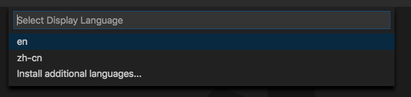
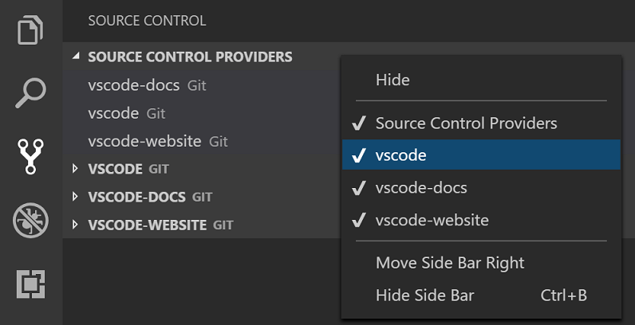
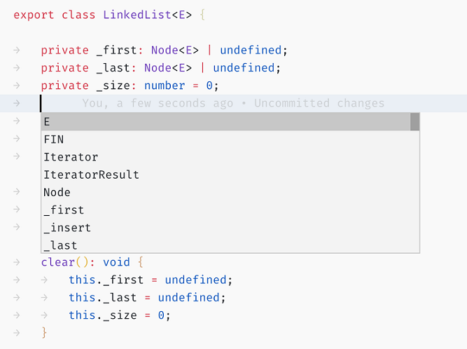
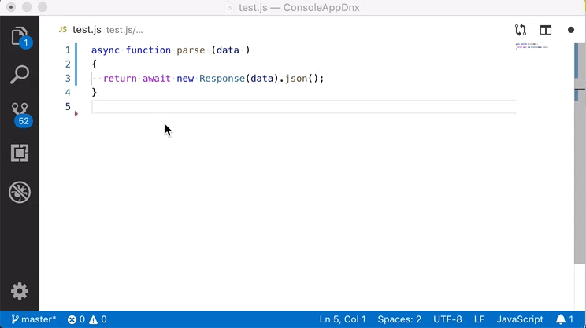
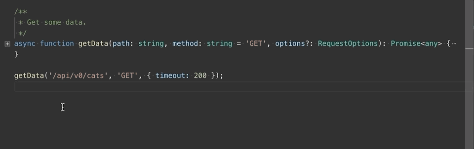
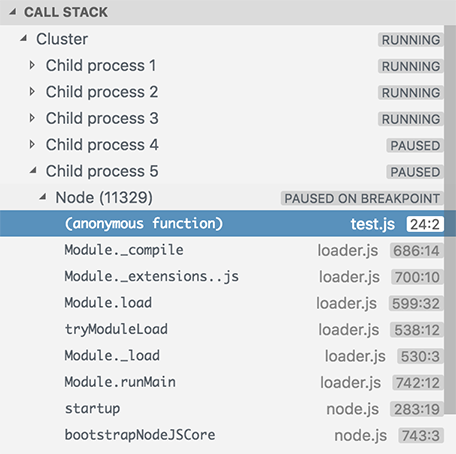
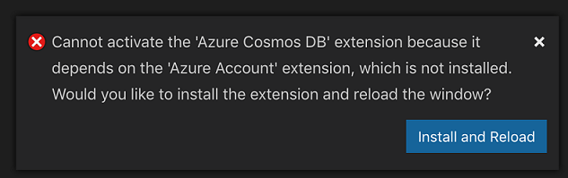
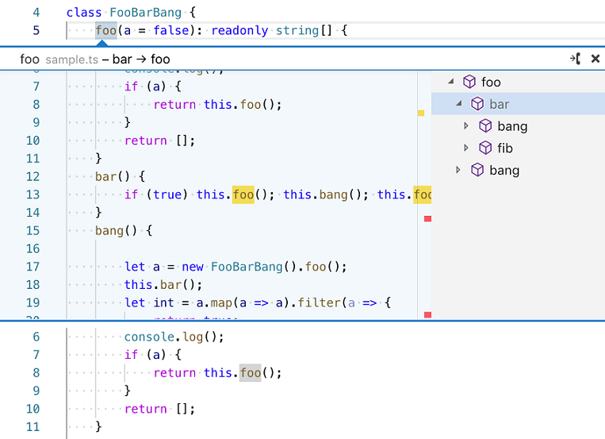
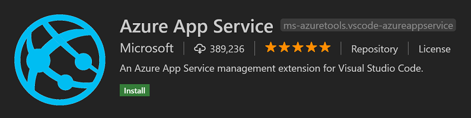

March 2019 (version 1.33)
Update 1.33.1: The update addresses these issues.
Downloads: Windows: User System | Mac: Intel | Linux 64-bit: deb rpm tarball snap | 32-bit: deb rpm tarball
Welcome to the March 2019 release of Visual Studio Code. There are a number of updates in this version that we hope you will like, some of the key highlights include:
- Easy Display Language selection - Quick Pick to choose between installed locales.
- Configurable IntelliSense display - Filter out elements like keywords or remove displayed icons.
- Choose default formatter - Set default document formatter by project and language.
- Go to Definition locations - Open Peek view and/or navigate to primary location.
- Convert to destructured parameters - New TS refactoring to use named parameter objects.
- Debugging support for subsessions - See subprocesses displayed under main debug session.
- Launch URI with debug session - Automatically open a browser when debugging web server code.
- Install missing extension dependencies - Detect and offer to install missing dependencies.
- "Remote Debugging for Node.js" topic - Learn how to attach to Node.js apps running on Azure.
If you'd like to read these release notes online, go to Updates on code.visualstudio.com.
You can also check out this 1.33 release highlights video from Developer Advocate Brian Clark.
The release notes are arranged in the following sections related to VS Code focus areas. Here are some further updates:
- Workbench - Improved Source Control view, easier list navigation with screen readers.
- Integrated Terminal - ConPTY on by default on Windows, rendering performance improvements.
- Languages - Disable CSS property value completions, TS improved inference and const assertions.
- Extension Authoring - Finalized smart selection API, install extension command.
- Engineering - Official Linux snap package, faster OSS builds with NPM package caching.
Insiders: Want to see new features as soon as possible? You can download the nightly Insiders build and try the latest updates as soon as they are available. And for the latest Visual Studio Code news, updates, and content, follow us on Twitter @code!
Workbench
Easier Display Language configuration
Running the Configure Display Language command will now open a Quick Pick listing the available locales based on the Language Packs you have installed, instead of only opening the locale.json file. When you make a selection, the locale will be automatically updated and you'll be prompted to restart VS Code for the change to take effect.

Improved Source Control view
The Source Control view has been aligned to behave like other views, such as the File Explorer, Debug view, etc. Repositories can now be made visible or hidden using context menu actions. Their order and sizing is now preserved. You can also show or hide the Source Control Providers view with context menu actions.

List simple keyboard navigation when screen reader detected
When VS Code detects that a screen reader is being used, it automatically turns on simple keyboard navigation for lists. This makes the list keyboard navigation easier for users with a screen reader since each key stroke will navigate to the corresponding item. This behavior applies for all lists and trees in the workbench, for example the File Explorer, Open Editors, and Debug views.
Editor
IntelliSense customization
There are new settings that control the IntelliSense display:
editor.suggest.filteredTypes- Filter specific types from IntelliSense, for instance keywords are filtered with:{ "keyword": false }.editor.suggest.maxVisibleSuggestions- Control the number of items IntelliSense shows at once.editor.suggest.showIcons- Enable or disable displaying icons in IntelliSense.
Below is an example of TypeScript IntelliSense with keywords filtered out, no icons, and limited to eight suggestions:

Default formatter selection
Many of our users work on different projects and often different projects use different document formatters. This has been hard to configure and we have added a new setting to help, editor.defaultFormatter. Now, when there are multiple formatters available, you can define one as the default. In fact, VS Code will encourage you to pick a default formatter.

This will update your configuration (as shown below) so that for subsequent save operations, VS Code knows what formatter to pick. We also encourage you to set this value in your project's configuration. For example, if your project team agrees on a formatter, then it should be spelled out in the project settings file.
"[javascript]": {
"editor.defaultFormatter": "HookyQR.beautify"
}
Defining a default formatter does not remove alternative formatters. We have added the Format Document With... command, which still allows you to pick a formatter before formatting a document. If needed, you can also reconfigure the default formatter from the dropdown.
Go To Definition customization
Some programming languages allow you to define a symbol in multiple locations. This means that a feature like Go to Definition must go to multiple locations at once. VS Code supports this by showing a Peek view with all locations. This behavior can now be fine-tuned with a new setting, editor.gotoLocation.multiple.
It can be set to these values:
peek- Open Peek view at the current location. This is the default.gotoAndPeek- Open the primary location (as defined by the extension) and also show a Peek view.goto- Only open the primary location.
Snippet variable $WORKSPACE_NAME
There is a new snippet variable that resolves to the name of the opened workspace/folder: $WORKSPACE_NAME.
Use it as shown in the snippet below:
"header": {
"scope": "javascript,typescript",
"prefix": "workspace",
"body": ["// the ${WORKSPACE_NAME}-project"],
"description": "Log output to console"
}
Integrated Terminal
ConPTY turned on by default on Windows build 18309+
For supporting versions of Windows 10 Insiders, the new terminal back-end ConPTY will be turned on by default. This should result in a more stable experience closer to the native terminal and adds 256 color support. If you experience issues, please let us or the Windows Console team know. You can always opt out with this setting:
{
"terminal.integrated.windowsEnableConpty": false
}
Data parsing capped to 12 ms
Previously, the amount of data parsed by the terminal was not being capped properly. This meant that on less powerful hardware, the amount of time parsing data and rendering would far exceed the ideal time to render a frame, resulting in laggy UI or a full lock up for commands that generated a lot of output. There is now a cap in place, which prevents this from exceeding approximately 12 ms, which should avoid these issues.
Languages
TypeScript 3.4
VS Code now ships with TypeScript 3.4.1. This update adds support for some new TypeScript language features—such as improved inference and new const assertions—as well as bringing tooling improvements and bug fixes.
Convert to destructured parameters refactoring
The new Convert to named parameters refactoring for TypeScript lets you quickly organize long function parameter lists by converting the function to take a single named parameter object.

Option to disable CSS property value completion
A new setting, css.completion.triggerPropertyValueCompletion, allows you to disable property value completion. For example, if you choose position from p and have this setting set to false, VS Code will not trigger the static | absolute | sticky | ... completions for the property value.
This is useful if you would like to use Tab/Shift + Tab to select previous and next completion items.
Debugging
Support for subsessions
In this milestone, we have added support to display debug sessions as a tree in the debugger UI. Previously debug session were displayed as a flat list, which made it difficult to grasp that sessions were related.
Since this functionality is available via a new extension API, it requires adoption by debugger extensions. In this milestone, the only debugger that makes use of hierarchical debug sessions is VS Code's Node.js debugger.
In Node.js cluster debugging, all subprocesses of a cluster are registered under the main debug session:

In the "server-ready feature" (see below), an automatically launched Chrome browser session is registered as a child of the server debug session.
Automatically open a URI
The last milestone had a preview version of the "server ready" feature, which allows you to open a URL in a web browser automatically as soon as a specific program output message is detected. This feature is useful for debugging web server source code because the URL opened in the browser can make the server hit a breakpoint as soon as the server is ready (and this all with a single F5 key press).
In this milestone, we've moved the feature out of preview. VS Code looks for the trigger message not only in the Debug Console but also in the Integrated Terminal. In addition, we've also improved the error handling.
Note that for technical reasons, it is not possible to support the "server ready" feature in external terminals.
Extensions
Install missing dependencies
We've improved the extension activation failure notification when VS Code detects a missing extension dependency and now provide an action to install the missing dependency.

You can also install all missing dependencies using the new Extensions: Install Missing Dependencies command.
Network proxy support for extensions
We now load the SSL/TLS certificates from the operating system and include them when validating https requests initiated by extensions. This supports proxies using their own SSL/TLS certificates and other setups with custom certificates.
In addition, http/https requests from extensions now honor the NO_PROXY environment variable, which lists the domain names separated by commas for which all proxy settings should be ignored.
Preview features
Preview features are not ready for release but are functional enough to use. We welcome your early feedback while they are under development.
Call Hierarchy
A call hierarchy view shows all calls from or to a function and allows you to drill into callers of callers and calls of calls. The image below shows that function foo is being called by bar and bang, then bar is being called by bang and fib.

This is a preview feature and there aren't any extensions currently providing real data for it. However, if you are an extension author, we invite you to validate our proposed API. If you are interested, there is a sample extension for testing: https://github.com/jrieken/demo-callhierarchy.
Extension authoring
Smart select API
We have finalized the smart select API used with the Expand Selection (⌃⇧⌘→ (Windows, Linux Shift+Alt+Right)) and Shrink Selection (⌃⇧⌘← (Windows, Linux Shift+Alt+Left)) commands. With this API, extensions can define the ranges that get selected in the editor.
Install extension command
A new command workbench.extensions.installExtension was introduced to install an extension from the Marketplace or a VSIX.
To install an extension from the Marketplace, you provide its identifier.
vscode.commands.executeCommand('workbench.extensions.installExtension', 'ms-python.python');
To install via a VSIX, you provide its location URI.
vscode.commands.executeCommand(
'workbench.extensions.installExtension',
vscode.Uri.file('path-to-vsix')
);
Debug toolbar contributions support positioning
It is now possible to position the contributed debug commands in any order in the Debug toolbar. The default debug commands are using the group navigation so if you would like your contributed commands to be mixed with the default ones, use the same group. More information about sorting inside groups can be found in the contribution points documentation.
For consistency, we are deprecating the menu ID debug/toolbar in favor of debug/toolBar. In the March release, we will support both menu IDs, but in April, support for the debug/toolbar menu ID will be removed.
"sidebarVisible" context renamed to "sideBarVisible"
For consistency, we are deprecating the context sidebarVisible in favor of sideBarVisible. In the March release, both contexts will be supported, but in the April release, support for sidebarVisible will be dropped.
TerminalOptions.shellArgs now accepts strings on Windows
Previously TerminalOptions.shellArgs only supported a list of arguments in the form string[]. This could cause issues on Windows as the string array needs to be converted into the command-line format and the conversion could go wrong or be hard to get right for complicated cases. You can now bypass this conversion process on Windows by using a string in command-line format directly.
Hierarchical debug sessions
In order to support hierarchical debug sessions, we've added an optional argument parentSession to the vscode.debug.startDebugging API. If specified, VS Code shows the debug session resulting from startDebugging in a tree-like way as a child of the parent session.
Removing the vscode.previewHtml command
The vscode.previewHtml command was used to render HTML pages in the editor before the webview API was introduced last year. However the vscode.previewHtml command suffered from some important security and compatibility issues that we determined could not be fixed without breaking existing users of the command. So instead of trying to fix vscode.previewHtml, we have opted to remove the command entirely in VS Code 1.33.
We've tried to give all extensions that use the vscode.previewHtml command ample warning so that they can upgrade to use the webview API. However, there may still be a few extensions that are still using the vscode.previewHtml command and will therefore no longer work. If you are using one of these extensions, please file an issue against it or, even better, submit a PR with the fix.
Proposed extension APIs
Every milestone comes with new proposed APIs and extension authors can try them out. As always, we welcome your feedback. This is what you have to do to try out a proposed API:
- You must use Insiders because proposed APIs change frequently.
- You must have this line in the
package.jsonfile of your extension:"enableProposedApi": true. - Copy the latest version of the vscode.proposed.d.ts file into your project.
Note that you cannot publish an extension that uses a proposed API. We may likely make breaking changes in the next release and we never want to break existing extensions.
Custom task execution
In addition to ProcessExecution and ShellExecution tasks, there is now a CustomExecution task. Instead of launching a process or running a script, it executes a callback provided by the extension.
let execution = new vscode.CustomExecution(
(terminalRenderer, cancellationToken, args): Thenable<number> => {
return new Promise<number>(resolve => {
// This is the custom task callback!
resolve(0);
});
}
);
const taskName = 'First custom task';
let task = new vscode.Task2(
kind,
vscode.TaskScope.Workspace,
taskName,
taskType,
execution
);
This will give an extension provided task more flexibility for maintaining state when the task is run. It also provides access to the input and output for a task. For a complete example, see the test item.
Commenting API
We did large refactoring around Commenting related features during the last two months, based on the lessons and experience we learned from the GitHub Pull Requests extension and feedback from the community. The newly designed Commenting API is generic and powerful enough for different types of usage. The GitHub Pull Requests extension has already moved to the new Commenting API.
The new interface is available in VS Code Insiders and we will use the April milestone to tune and tweak the API. The old Commenting API will also be removed in April. You can play with the sample extension to get a better understanding of the API or take a deep look at GitHub Pull Requests.
WebviewOptions.portMapping
The proposed WebviewOptions.portMapping setting allows extensions to transparently define how localhost ports are resolved inside of webviews.
const panel = vscode.window.createWebviewPanel(
'dog',
'Dog Doodling',
vscode.ViewColumn.One,
{
portMapping: [
// Map localhost:3000 in the webview to localhost:4000 externally
{ port: 3000, resolvedPort: 4000 }
]
}
);
panel.webview.html = `<!DOCTYPE html>
<html lang="en">
<head>
<title>Dog Doodling</title>
</head>
<body>
<!--
With the above port mapping, this image will actually be resolved
to localhost:4000 on the local machine
-->
<img src="http://localhost:3000/canvas.png">
</body>
</html>`;
It is considered good practice to start services like live servers on a random port. With port mapping, a webview's HTML content can use a hard-coded port that is mapped to the dynamically opened port that the service is really running on.
Call Hierarchy Provider
There is a proposed API for a CallHierarchyItemProvider supporting the call hierarchy feature. Try it out, leave feedback, and help us make this good API.
Engineering
Official Linux snap package
We now fully support distributing Visual Studio Code as a snap package. Snaps work across many different Linux distributions, provide reliable execution environments for a much stabler VS Code, and support background updates. Yes, that's right, you now get in-product automatic updates for Linux just as the Windows and macOS users do. 🎉
Installing the snap package is as easy as:
sudo snap install code --classic
Are you an insider? Come on and jump over to the Insiders snap package, and get daily updates without any extra work:
sudo snap install code-insiders --classic
Caching NPM packages
Thanks to our friends over at Microsoft DevLabs, we were able to speed up our OSS builds using an Azure Pipelines extension, which caches NPM packages and speeds up the entire npm install process. If you'd like to know more about this, you can read this blog post by Ethan Dennis.
Strict null checking of VS Code
We made a final big push this iteration to enable TypeScript's strict null checking for the core VS Code codebase. Strict null checks help to catch some common programming mistakes and make our codebase more maintainable, so that we can keep moving quickly yet safely.
Enabling strict null checks for core VS Code was a six-month effort that involved at least 40 contributors and touched tens of thousands of lines of source code. You can read about how we went about incrementally enabling strict null checking in issue #60565.
Contributions to extensions
GitHub Pull Requests
This milestone we continued working on improvements to the GitHub Pull Requests extension.
Below are some of the new features:
- New
workbench.action.addCommentandworkbench.action.submitCommentcommands to customize the keyboard shortcuts for adding and submitting comments. - Polished rendering of GitHub todo lists in the description page.
- Adoption of the new Commenting API.
Vetur
The Vetur extension now supports any workspace version of TypeScript > 2.8, so that users get more consistent language support between *.vue, *.js, and *.ts files.
Other than making available the new TypeScript language features and bug fixes, Vetur also improved its integration with TypeScript to bring grayed-out unused variables, code actions (autofixes), and auto import to *.vue files.

Read more on these features in the Vetur Changelog.
New documentation
Node remote debugging
The new Remote Debugging for Node.js topic explains how you can connect the VS Code debugger to your Node.js applications running on Azure with the Azure App Service extension.

Notable fixes
- 27636: Quick commands fuzzy search doesn't work for text in brackets
- 66632: Terminal link underlines on lines that start with \t are offset
- 70962: Console.WriteLine() does not result in an empty line anymore
Thank you
Last but certainly not least, a big Thank You! to the following folks that helped to make VS Code even better:
Contributions to our issue tracking. Please see our Community Issue Tracking page, if you want to help us manage incoming issues:
- Alexander (@usernamehw)
- Simon Chan (@yume-chan)
- Danny Tuppeny (@DanTup)
- John Murray (@gjsjohnmurray)
- Progracientist (@beastdestroyer)
Contributions to vscode:
- Adam Tajti (@adamtajti): Cleanup: Remove duplicate configuration from outline.contribution.ts PR #69861
- Hyun-seok Oh (@algoshipda): Fix comment typo handker -> handler PR #70150
- Jimmy Merrild Krag (@beruic): Change icon name on Linux for icon theme compatibility PR #62650
- @dekkonot: Fix spelling of 'accessible' in tasks.json group enum PR #70145
- David Lechner (@dlech)
- ExE Boss (@ExE-Boss): feat(coffeescript): Add
.icedextension PR #70686 - Martin Wimpress (@flexiondotorg): Snapcraft update. Fixes #63194 Fixes #57019 PR #70884
- Phil Marshall (@flurmbo): debugger console recognizes italic ansi code PR #67511
- Gabriel DeBacker (@GabeDeBacker): User/gabrield/extension callback as task PR #66819
- Gunay Mert Karadogan (@gmertk): Add workspace name variable for snippets #68261 PR #68653
- Timur Guzairov (@gtim108): Initialize viewletService in Workbench PR #70010
- Ian Sanders (@iansan5653): Correctly handle succeeding ANSI color codes (fix #70416) PR #70502
- Jean Pierre (@jeanp413)
- Krish De Souza (@Kedstar99)
- Omkar Manjrekar (@manjrekarom): Support for remote management in git PR #60640
- Karthikayan (@ParkourKarthik): git: Open File command fix on clean tree PR #60426
- @pawelurbanski: Fixing IntelliSense verbosity with screen readers PR #67155
- Alasdair McLeay (@penx): Update .nvmrc PR #70701
- Ryan A. Pavlik (@rpavlik): Fix typo in spelling of Preferences. PR #69807
- Scott Craig (@scottymcraig): Fixes Git Clone Problem with Spaces PR #60573
- Benas Svipas (@svipas)
- Takashi Tamura (@tamuratak): Make an error message easier to understand PR #69701
Contributions to vscode-css-languageservice:
- Benas Svipas (@svipas): Implement CSS triggerPropertyValueCompletion setting PR #149
Contributions to node-jsonc-parser:
- Jakub Rożek (@P0lip): add line and column information to scanner and visitor PR #17
Contributions to
language-server-protocol: - Louis Roché (@Khady): fix typo in WorkspaceEdit description PR #691
- Konrad Borowski (@xfix): List Perl 5 and Perl 6 identifiers separately PR #694
- Arjun Attam (@arjun27): Fix number of references example in LSIF spec PR #695
- Louis Roché (@Khady): Fix typo PR #698
- Remy Suen (@rcjsuen): Add missing declarationProvider field into server's capabilities PR #701
Contributions to inno-updater:
- Sayan Nandan (@sntdevco): Improve tests for filerec PR #9
Contributions to debug-adapter-protocol:
- 大表哥 (@Aaaaash): Add Cloud Studio among the Dev Tools PR #31
- Jens Fischer (@Gama11): Add debug adapters from the Haxe ecosystem PR #34
- Gregg Miskelly (@gregg-miskelly): Add link to Visual Studio Debug Adapter Host repo PR #37
Contributions to localization:
There are over 700 Cloud + AI Localization community members using the Microsoft Localization Community Platform (MLCP), with over about 100 active contributors to Visual Studio Code.
We appreciate your contributions, either by providing new translations, voting on translations, or suggesting process improvements.
Here is a snapshot of contributors. For details about the project including the contributor name list, visit the project site at https://aka.ms/vscodeloc.
- Bosnian: Ismar Bašanović.
- Bulgarian: Любомир Василев.
- Czech: Jakub Stibůrek, David Jareš, Samuel Tulach, Jan Brudný.
- Danish: Lasse Stilvang, Alexander Matzen, Johan Fagerberg, Allan Kimmer Jensen.
- Dutch: Jos Verlinde, Hans Zoons, Eric Algera, Sujith Quintelier.
- English (United Kingdom): YASHU MITTAL, Mohammad Idrees, Chris Dias.
- Finnish: Petri Niinimäki, Riku Riikonen,Valtteri Vatanen.
- French: Corwin D'Ambre, Mohamed Sahbi, Antoine Griffard, Maxime Coquerel, Cédric M., Steven Dugois, franto.
- German: Frank Lindecke, Dejan Dinic, Jakob von der Haar, Mario Koschischek, Florian Berger, Hans Meiser, Carsten Kneip, Thorsten Hans, Sebastian Seidl.
- Greek: Jim Spentzos, Stratos Kourtzanidis, John D, Δημήτρης Παπαϊωάννου.
- Hebrew: Shalom Craimer, Snir Broshi, Kyle Orin.
- Hindi: Satish Yadav, Amit Gusain, Ashok Kumar Rathore, nirav adatiya, Rajeev Desai, shaswat rungta, Kumar Vaibhav, Jagjeet Singh, Pratishek PII, Chethana S, Dhanvi Kapila.
- Chinese Simplified: Tingting Yi, 斌 项, feiyun0112 feiyun0112, 刘瑞恒 刘瑞恒, 建东 薛, YITING ZHU, Joel Yang, Junzhe Liu, Dave Young, 昊宇 周, Tony Xia, Yu Zhang, XIANG ZUO, 彦佐 刘, Edi Wang, 少民 谈, Zhiqiang Li, 福永 叶, G.Y. Z, Hao Hu, Pluwen, meng shao, Xiangrui Kong, Liam Kennedy, 松阳 樊, Young Bige, Justin Liu, Jessica Zhang, Licheng Ren, 驰 雷, sun qing, xiong Fu, Fan Su, Lynne Dong, 吉姆 舒, zhao yu, 游 尤, 剑秋 陶, Hanlin Yang, bh wu, Hanyu ZHANG, Y F, WangCG duoduobear, Jiang LI, 越 郑, ziqiang sun, 正元 刘, peng wei, 瑜 周, Simon Chan, 仁松 陈, 翼 张, Wang Weixuan, Ludi Fang, 九鼎 谭.
- Chinese Traditional: 謝政廷, 奕濬 潘, Winnie Lin, 小克.
- Hungarian: Péter Nagy, Levente Hallai Seiler, Richard Borcsik, Dániel Tar.
- Indonesian: Laurensius Dede Suhardiman, Franky So, Rachmat Wahidi, Afnizar Nur Ghifari, Pradipta Hendri, Azhe Kun.
- Italian: Alessandro Alpi, Bruni Luca, Andrea Dottor, Riccardo Cappello, Aldo Donetti, Michael Longo.
- Japanese: nh, EbXpJ6bp -, Hasefumi, Masakazu TENMYO, torisoup, Takayuki Fuwa, Yosuke Sano, Makoto Sakaguchi, 裕子 知念, Rie Moriguchi, Koichi Makino, Fujio Kojima, Kazuya Ujihara, Yasuaki Matsuda.
- Korean: Jong Heun Shin, Kyunghee Ko, Jae Yong Kum, SeungJin Jeong.
- Latvian: kaspars bergs.
- Norwegian: Andreas Rødland, Cookius Monsterius, Stephan Eriksen.
- Polish: Grzegorz Miros, Tomasz Świstak, Michal Szulc, Bartek PL, Szymon Seliga, Tomasz Chojnacki, Marcin Weksznejder, Piotr Grędowski, Artur Pelczar, Marcin Floryan, Jakub Jedryszek.
- Portuguese (Brazil): Marcondes Alexandre, Albert Tanure, Marcelo Fernandes, Junior Galvão - MVP, Roberto Fonseca, Ray Carneiro, Renan Miguel, Lucas Miranda, Eduardo Moura, Bruno Talanski, Bruno Sonnino, Jucinei Pereira dos Santos, Emmanuel Gomes Brandão, Flávio Albuquerque Camilo, Pablo Garcia, José Rafael de Santana, Douglas Ivatiuk Martim, Giuliano Reginatto, Marcos Dias, Alan William, Lucas Nunes, Gabriel Schade, arthurdenner ., Mauricio Lima, Gabriel Barbosa, Victor Cavalcante, Letticia Nicoli, Fernando Val, Milton Camara, Felipe Scuissiatto, Alessandro Fragnani, Gustavo Bezerra, Cynthia Zanoni, Marcelo Guerra, Jhonathan Soares, Rafael Laranja, Swellington Soares.
- Portuguese(Portugal): Vitor Barbosa, João Carvalho.
- Romanian: Mihai Marinescu.
- Russian: Andrey Veselov, michael v, Иван Лещенко.
- Serbian: Milos Zivkovic.
- Spanish: Andy Gonzalez, Engel Aguilar, Alvaro Enrique Ruano, Carlos Mendible, José María Aguilar, julian3xl, Ing. Sergio Uziel Tovar Lemus, Mario Mendieta, Jorge Serrano Pérez.
- Tamil: Mani M, Krishna Pravin, Jeffin R P, Vetri ..
- Turkish: Hüseyin Fahri Uzun, Okan Çetin, Muhammed Emin TİFTİKÇİ.
- Ukrainian: Dmytro Kutianskyi, Did Kokos.
- Vietnamese: Belikhun, Việt Anh Nguyễn.